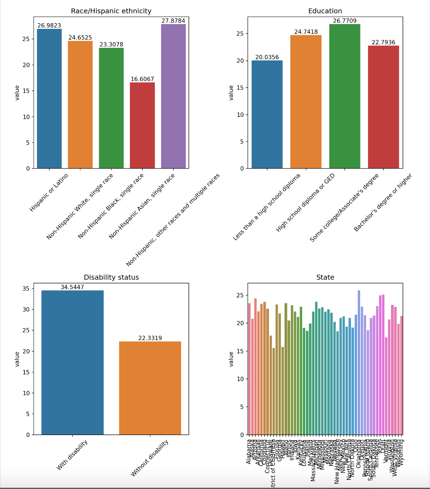
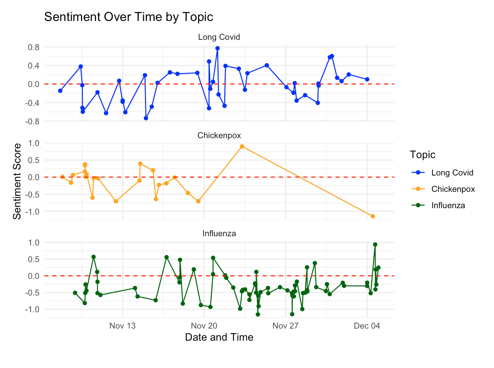

Concluding Thoughts
In our exploration of Long Covid, we adopted a comprehensive approach that drew upon diverse sources such as governmental data, public surveys, and media coverage. This multifaceted strategy allowed us to gain a nuanced understanding of Long Covid’s global impact and the diverse ways it is being addressed. Given the current literature covering a wide array of symptoms, varying levels of severity, and the inherent uncertainties surrounding this relatively new phenomenon, deciphering the true nature of Long Covid and identifying those most at risk posed significant challenges.
Returning to the core of our investigation, we revisit the ten data science questions that framed our analysis. These questions served as guiding pillars, steering our exploration through the complex landscape of Long Covid. By systematically addressing these inquiries, we aimed to unravel the intricate web of factors contributing to Long Covid’s manifestation, its impact on different demographics, and the effectiveness of existing measures in mitigating its consequences. Our analysis sought not only to uncover patterns and trends but also to provide valuable insights that contribute to a more informed and nuanced understanding of Long Covid’s implications on a global scale.
Question 1: How does gender and age affect one’s chances of experiencing long covid symptoms?
Question 9: Can symptoms be used to predict a patient’s demographic information?

We begin our exploration by delving into the manifestations of Long Covid symptoms with respect to sex and age. Our initial approach involves visualizing symptoms extracted from the Harvard Survey results categorized by sex. Our observations suggest a potential gender-specific divergence in the impact of Long Covid: men may be more susceptible to mental health issues, while women seem to exhibit physical symptoms linked to mental health, such as hair loss. This pattern is corroborated by findings in the CRIS UK Survey, where, within comparable age groups, men display slightly higher levels of stress and worry compared to women.
In our pursuit of understanding whether symptoms can serve as predictors for a patient’s demographic information, we employ decision trees using data from the Harvard survey. Leveraging dimensionality reduction and clustering techniques, our initial exploration reveals that utilizing symptoms to predict hospitalization may not be the most effective approach. Consequently, we pivot our focus to predicting sex through decision trees, unveiling results aligned with our preliminary exploratory data analysis (EDA). The analysis suggests that, to some extent, most symptoms point toward the patient being female, with the exception of confusion, which tends to be more associated with men. Therefore, based on this self-reported data, it emerges that men might exhibit more mental-health related symptoms in response to Long Covid compared to women.
For future investigations, introducing a medical professional’s verification of symptoms for each patient, rather than relying solely on survey data, would enhance the robustness of the study. Moreover, a larger and more comprehensive dataset could contribute to refined classification and deeper insights into the intricate dynamics of Long Covid symptoms across diverse demographics.
Question 2: Does pre-existing chronic illnesses make one more prone to experiencing long covid symptoms?
Question 3: In what ways does race affect the persistence of long covid symptoms?
Question 4: How might the existing research on long covid symptoms be skewed to the discussion of respiratory illnesses?
Question 5: What is the most common collection of symptoms present in someone with long covid?
Question 8: What symptoms are highly correlated with each other?

Delving deeper into our exploratory data analysis, we find answers to several pertinent questions. Confirming response to question 2, individuals with disabilities, particularly those with pre-existing health conditions, exhibit a higher frequency of symptoms and are more prone to experiencing Long Covid. This observation is further supported by the UK dataframe, where individuals with prior health issues are not only more symptomatic but also more susceptible to Long Covid. Examining the influence of race on Long Covid diagnosis reveals notable variations, with individuals of multiple races constituting the highest demographic affected.
Building on this, our analysis underscores a critical revelation: the predominant symptoms associated with Long Covid are not primarily respiratory but rather mental in nature. Worry, stress, anxiety, and depression emerge as pervasive symptoms consistently observed across all survey data. Common symptoms encompassing various demographics include stress and worry, weakness, joint pain, and shortness of breath.
Unveiling correlations between symptoms, we discern connections between respiratory symptoms like cough and various other symptoms. Additionally, we note commonplace associations such as constipation and appetite loss. This nuanced understanding of symptom correlations contributes to a more comprehensive grasp of the intricate manifestations of Long Covid across diverse individuals and conditions.
Question 6: What is the sentiment of current media on the topic of long covid?
Question 7: Is the sentiment on long covid in the media negative is comparison to other infectious diseases?
Sentiment analysis conducted on the news database we compiled yielded insightful findings. Our analysis led us to the conclusion that the current media portrayal of Long Covid is notably neutral when compared to coverage of other infectious diseases such as chickenpox and influenza. Several factors could contribute to this observation, one being the reduced prevalence of Long Covid in recent news cycles. In contrast, sentiment fluctuations in influenza reporting were particularly pronounced over the past month.

Furthermore, we applied Naive Bayes classification to categorize news reports among the three infectious diseases. Remarkably, we successfully developed a model capable of effectively discerning the topics of news articles. This achievement holds significant promise for future applications, especially if media coverage of Long Covid intensifies. The ability to automatically categorize news articles can provide valuable insights and aid in tracking the trajectory of media attention on Long Covid, offering a dynamic tool for ongoing analysis.
Question 10: What is the government opinion on the state of long covid research/information through their public responses?
Lastly, our sentiment analysis unveils a positive tone within the President’s memorandum regarding the necessary steps to address Long Covid in the United States. Despite lingering challenges such as grief, mental health impacts from the pandemic, and the persisting symptoms of Long Covid for many individuals, the optimistic stance of the government towards addressing Long Covid is a hopeful sign for the future of our society.
In the realm of data science and analysis, we confronted challenging questions surrounding Long Covid. We explored the nuanced roles of sex and age in Long Covid symptoms, scrutinized the influence of various demographics on the manifestation of symptoms, examined the media’s neutral response to Long Covid, and observed the government’s optimistic outlook for the future.
Future Study
Looking ahead, an ideal dataset would be one based on individual patient data rather than summary statistics, which would allow for enhanced opportunities for building more accurate models for future predictions. Additionally, an expanded collection of historical news on Long Covid, especially spanning the years 2021 and 2022, could provide intriguing insights into the evolution of sentiment over a more extended period. To gain a deeper understanding of the government’s perspective, analyzing congressional hearings on Long Covid and exploring documentation from other countries would contribute to a more comprehensive and global approach to studying this condition.